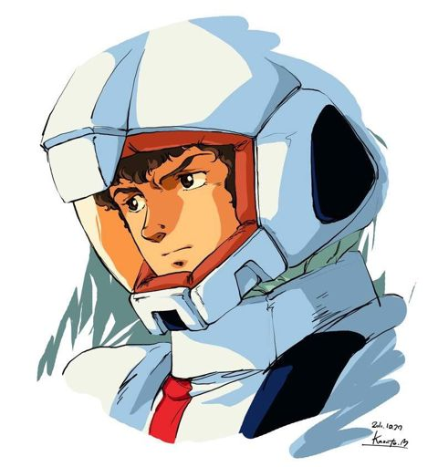

Gundam Pilot | The White Devil
I'm a pilot, an engineer, and someone who has seen the battlefield change before my eyes. From the cockpit of a Mobile Suit to the depths of programming, I strive to adapt, improve, and push beyond my limits. Whether in war or in development, precision and strategy are everything.
I've spent years refining my skills, understanding the systems that drive both machines and people. In my career, I have worked on projects that required both tactical decision-making and technical expertise.
Previously, at Anaheim Electronics, I helped develop user-centric software that enhanced machine efficiency—much like tuning a Mobile Suit for peak performance.
At White Base Technologies, I led a team to redesign a user interface that allowed for better real-time interaction, ensuring seamless execution under high-pressure environments.
Newtype Task Manager: A highly responsive task management system designed for those who need to react in real time.
AI Battle Assistant: An advanced AI system that predicts patterns and automates decision-making, much like an onboard support system in combat.
Digital Federation Archive: A platform that consolidates and organizes vast amounts of data for research and strategy development.